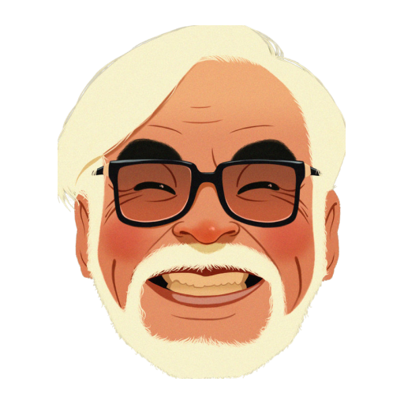

Film Director, Producer, Screen Writer, Animator and Manga Artist

How Hayao's Epic Adventure Began
Hayao started pursuing his dream, of making a career in animation, in 1963, he joined the Japanese animation
giant, ‘Toei Animation Pvt Ltd’. During his time there, Miyazaki got to work on projects like ‘Wolf Boy Ken’ and ‘Watchdog
Bow Bow’. The animator earned the praises of the ‘Toei’ workers, after he improved the script of their project ‘Gulliver
Travels To The Moon’ and became successful in arriving at a convincing end to its story.
Even during the 1990’s Hayao mesmerized lovers of manga through his works. His works such as ‘Porco Rosso’ and ‘Princess
Mononoke’ were considered to be a deviation from his earlier works and were well-appreciated by everyone. Although
Miyazaki had retired by the end of the decade, he returned to direction in 2004 through the fantasy film ‘Howl’s
Moving Castle’. This animation icon took over the project after its original director Mamoru Hosuda passed away.
The movie went on to become a well-acclaimed piece of work.
After a 3-year hiatus from filmmaking, Hayao surfaced with a project named ‘Gake no ue no ponyo’. This feature-length
film, which was released in 2008, was well-received and grossed approximately $200 million at the box-office. This
iconic director then worked on the screenplay of the movie ‘The Secret World of Arrietty’, which reached the audiences
during mid-2010. He also worked as a screenwriter on a film titled ‘From up on Puppy’, which released the very next
year. Hayao’s last directorial venture was the film titled ‘The Wind Rises’, which released in 2013. The film dealt
with a series of events which occurred during World War II.